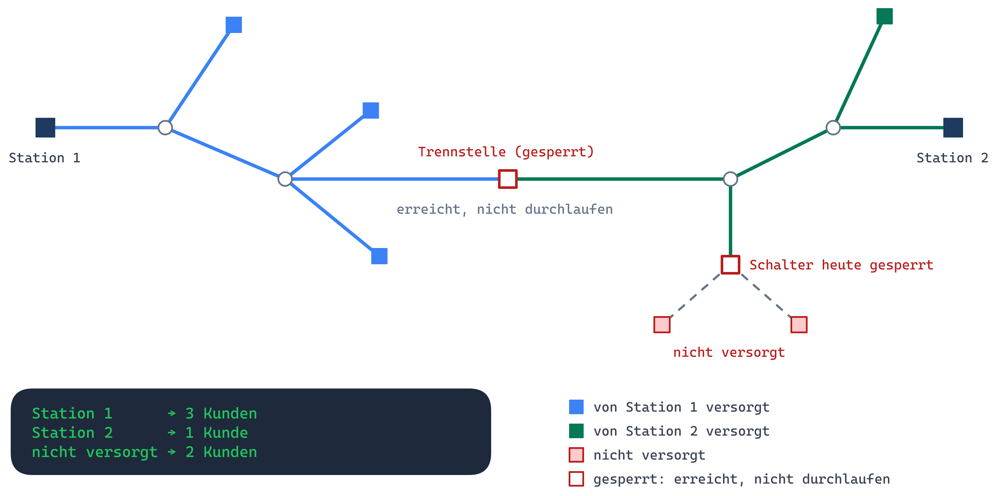
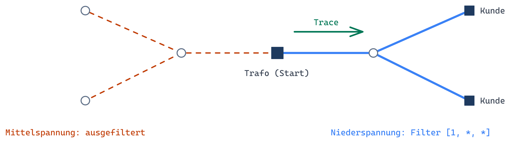

Blatt 5 · Berechnungen
Was das Netz beantworten kann
Welche Kunden hängen an welcher Station? Ist jeder Kunde versorgt? Was ist von hier aus in 300 m erreichbar? Wie lautet der kürzeste Weg? Alle Berechnungen laufen nach demselben Muster und holen sich nur den Teil des Netzes, den sie besuchen.
Was jede Berechnung bekommt
| Eingabe | Beispiel | Pflicht |
|---|---|---|
| Startmenge | alle Trafos im Ortsnetz Nord, vom Host per Abfrage geholt | ja |
| Gewicht | Länge, Fahrzeit, Widerstand | nein, Standard ist Länge |
| Abweichungen vom Schaltzustand | Schalter 4711 heute gesperrt | nein |
| Ebene | nur die Niederspannung; ihre Quellen, Senken und Sperren gelten dann | nein |
| Filter | nur Kanten vom Typ [Niederspannung, *, *] | nein |
| Gebiet | nur innerhalb eines Ortsnetzes oder Rechtecks | nein |
Das Ergebnis kommt als Liste von IDs, Stück für Stück. Der Host kann sie direkt in eine Tabelle schreiben oder nach den ersten Treffern abbrechen. Lange Läufe lassen sich jederzeit abbrechen.
Schaltzustand
Normalschaltzustand
Was im GIS erfasst ist, steht im Netz: gesperrte Knoten und deaktivierte Kanten. Er kommt mit dem Shard und kostet keine eigene Abfrage. Standard ist „alles offen“.
Abweichung
Für eine einzelne Berechnung lassen sich Knoten sperren oder freigeben, Kanten deaktivieren und Richtungen überschreiben. Das Netz selbst ändert sich dabei nicht.
| Zustand | Wirkung in der Berechnung |
|---|---|
| Knoten gesperrt | wird erreicht, aber nicht durchlaufen. Er erscheint im Ergebnis, alles dahinter nicht. |
| Kante deaktiviert | existiert für diese Berechnung nicht |
| Richtung überschrieben | gilt statt der gespeicherten Richtung |
Im Code heißt es neutral Blocked (Knoten) und Disabled (Kante). Elektrisch bedeutet ein „geschlossener“ Schalter, dass Strom fließt. Die neutralen Namen vermeiden diese Verwechslung.
Trace: Wer wird von wem versorgt?
Der Trace läuft von jeder Quelle (z. B. jedem Trafo) für sich und meldet jeden erreichten Knoten mit dieser Quelle. Er stoppt an gesperrten Knoten und an anderen Quellen. Ein Knoten, den zwei Quellen erreichen, erscheint deshalb bei beiden.

| Frage | So wird sie gestellt |
|---|---|
| Welche Kunden hängen an Station 1? | Trace ab Station 1, Ergebnis nach Typ [*, Kunde, *] filtern |
| Ist jeder Kunde versorgt? | Trace ab allen Stationen; jeder Kunde, der nicht im Ergebnis ist, ist nicht versorgt |
| Was passiert, wenn Schalter 4711 öffnet? | Derselbe Trace mit der Abweichung „4711 gesperrt“, Ergebnisse vergleichen. In gView macht das die Operation outage in einem Schritt: welche Kunden vorher versorgt waren und es danach nicht mehr sind. |
| Wird ein Kunde von zwei Stationen erreicht? | Er erscheint im Trace bei beiden Stationen. Die Versorgungsabfrage liefert pro Kunde die Liste seiner Stationen: leer heißt nicht versorgt, mehr als eine heißt mehrfach versorgt. |
Spannungsebenen trennen
Ein Trafo hängt an beiden Ebenen. Ein Trace in der Niederspannung, der beim Trafo startet, würde sonst auch in die Mittelspannung laufen. Die Ebene der Suche hält ihn in seiner Ebene: Sie wählt die Kantentypen der Ebene (wie ein Filter [Niederspannung, *, *]) und dazu deren Quellen, Senken und Sperren. Ein Trace mit Ebene hält an den Quellen dieser Ebene an. Dass eine zufällig aufliegende Muffe die Ebenen gar nicht erst verbindet, regelt das Bauen (Blatt 7).

[1, *, *]). Die Mittelspannung wird nicht betreten und auch nicht geladen.Erreichbarkeit
Alle Knoten innerhalb bestimmter Kosten, sortiert nach Kosten, mit der Kante, über die jeder erreicht wurde. Beispiele: alle Kunden innerhalb von 300 m Kabellänge ab einem Kasten, oder alle Straßen, die in 5 Minuten erreichbar sind.
Kürzester Weg
Von einem Knoten zu einem anderen, mit dem gewählten Gewicht. Das Ergebnis ist eine Folge von Kanten mit Durchlaufrichtung und Gesamtkosten. Zum Zeichnen schlägt der Host für jede Kante das Originalobjekt und den Bereich nach:
| Schritt | Kante | Richtung | Original und Bereich | Kosten |
|---|---|---|---|---|
| 1 | L-210#1 | vorwärts | Leitung.210 · 0–48 m | 48.0 |
| 2 | L-210#2 | vorwärts | Leitung.210 · 48–112 m | 64.0 |
| 3 | KV-88 | vorwärts | Kastenverbinder.88 · ganz | 4.2 |
| Summe | 116.2 |
SpatialNET hat einen Helfer, der aus der Originalgeometrie und dem Bereich das Teilstück ausschneidet. Die Geometrie liefert der Host.
Start am Ort
Startpunkte lassen sich über ihr Objekt (Kasten#17), ihre ID, ein Typmuster oder einen Ort angeben (@x,y, der nächste Knoten, auch ein Hilfsknoten). Liegen an einem Ort mehrere Knoten, weil die Ebenen getrennt sind, wählt die Ebene der Suche den richtigen; sonst meldet die Suche die Kandidaten. In Carto nimmt ein weiterer Klick auf dieselbe Stelle den nächsten Knoten.
Wie viel geladen wird
- Eine Berechnung lädt nur die Shards, in die sie tatsächlich kommt. Ein Trace in einem Ortsnetz lädt in der Regel genau einen Shard.
- Im Speicher bleibt nur, was die Berechnung sich merken muss: beim Trace die Knoten des gerade verfolgten Versorgungsgebiets, bei der Versorgungsabfrage dazu ein kleiner Eintrag pro Kunde. Auch die Versorgung des ganzen Netzes passt so in den Speicher, am besten mit den Trafos nach Shard sortiert.
- Fehler beim Host (z. B. Datenbank nicht erreichbar) brechen die Berechnung ab und werden unverändert weitergegeben. Eine Kante, die auf einen unbekannten Knoten zeigt, ist ein Fehler im Netz und wird gemeldet, nicht übersprungen.